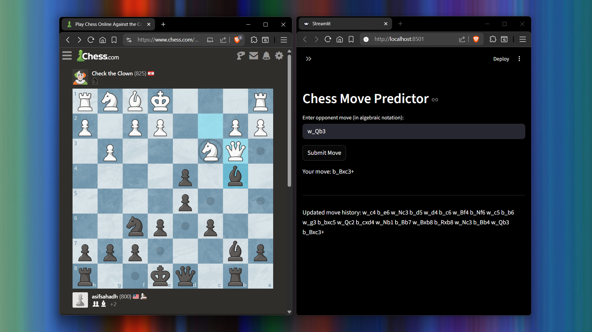
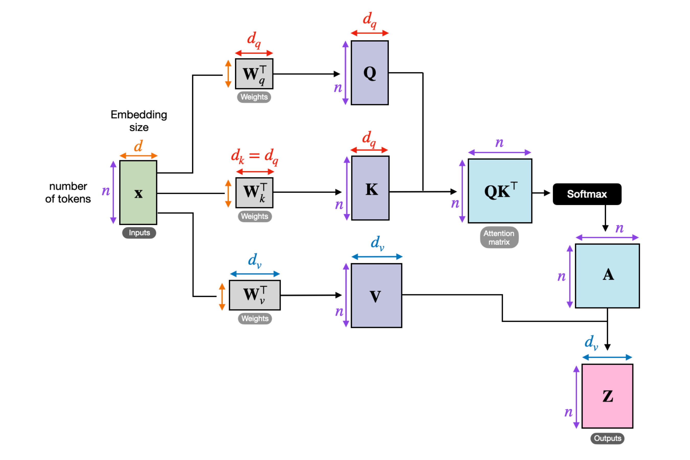

Oct 28, 2025
Using roughly 2.5 million samples of chess game data, I pre-trained a Transformer to predict chess moves. It was fascinating to see it handle checkmates, recognize cases where multiple knights could move to the same square (and adapt the notation accordingly), know when to castle, and even attempt to dodge a queen’s attack. It’s far from perfect and nowhere near Stockfish, but watching it “think” was impressive.

Sometimes when I feel lazy to draft my own text, I let ChatGPT draft it for me. The issue is that its writing style is nowhere close to mine. So, I built an encoder-only-Transformer model and implemented instruction fine-tuning technique to generate a personalized version of the AI-generated text. I built this using a custom dataset of 387 samples and the training was done utilizing an NVIDIA 3070 Ti Desktop GPU with a training time of 90 minutes. (Image source: OpenAI)

Developed and trained a low-parameter transformer model (162M) similar to GPT-2 for next-word prediction, with the primary goal of understanding the inner workings of large language models, covering key concepts such as attention mechanisms, the transformer architecture, and more. Additionally explored instruction fine-tuning and classification fine-tuning to extend the model’s practical capabilities. (Credits: Vizuara AI Labs | Image source: Sebastian Raschka)
Hirewise is a multi-stage smart recruitment system built using NLP techniques, LLMs, and information retrieval methods for resume–JD analysis, recruiter chat assistance, and AI-generated text detection. Developed in Streamlit with integrated authenticity checks and real-time candidate verification via web scraping. Trained a novel AI-text detector achieving 97% accuracy, 97% F1-score, and an AUROC of 0.99, surpassing models like DetectGPT (0.95).
Implemented advanced Retrieval-Augmented Generation (RAG) pipelines to query from industrial documentation, combining BM25 and BERT embeddings, along with an LLM-based reranking pipeline using models sourced from Ollama and other open source LLM providers. Further developed a Hybrid pipeline to enhance chunk selection, retrieval relevance, and generate contextually accurate responses for user queries. (Image source: NVIDIA)

Noa AI is an agentic, bilingual speech-to-speech system built using Python that enables natural voice interaction in both English and Hindi. The system runs entirely on CLI and features 5 specialized tools - General, Memory, Companion, Web, and Interview, each designed to perform a specific task.
Built a character-level text generation model using PyTorch to generate Shakespearean-like text. The model employs an LSTM with 4 layers of 256 units each, and the training process took nearly 5 hours, and the dataset used was of Shakespeare's writings, sourced from Andrej Karpathy's blog.

Implemented optimization algorithms to minimize a Neural Network loss function. The algorithms include Gradient Descent, Momentum based algorithms, Adaptive learning rate based algorithms, Adam, and its variants. Compared their performance by evaluating the steps taken to converge.